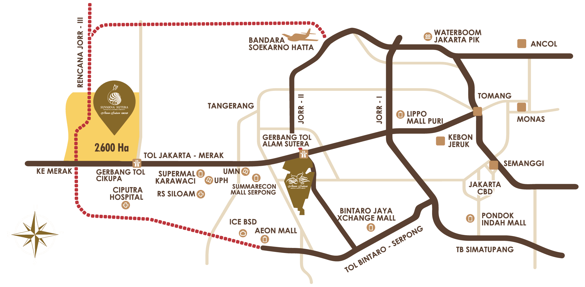
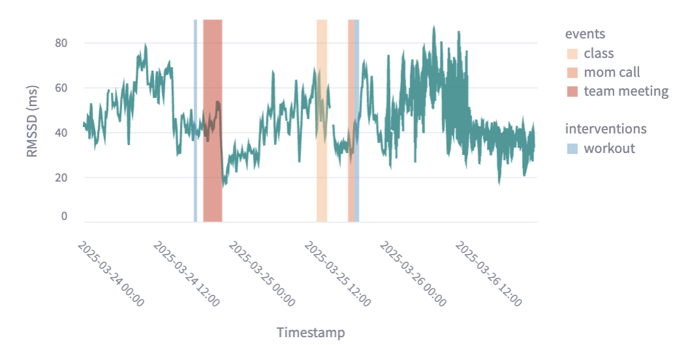
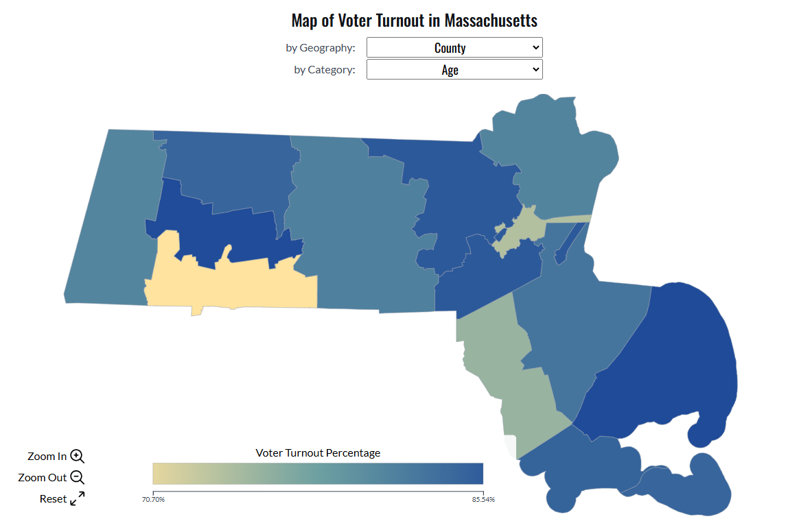
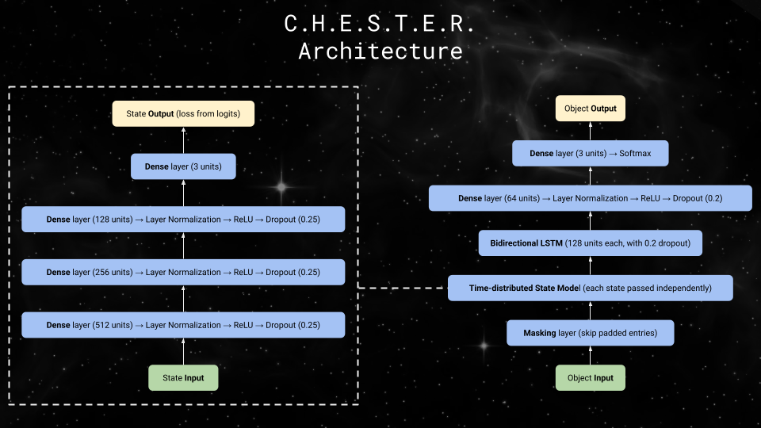
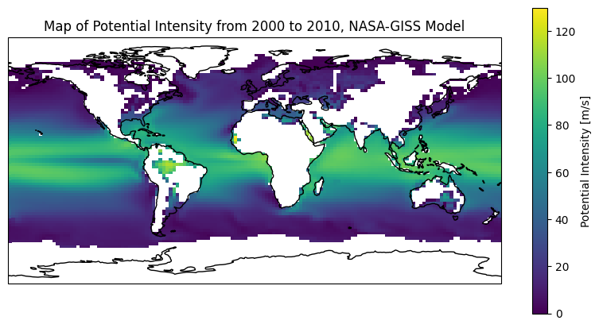
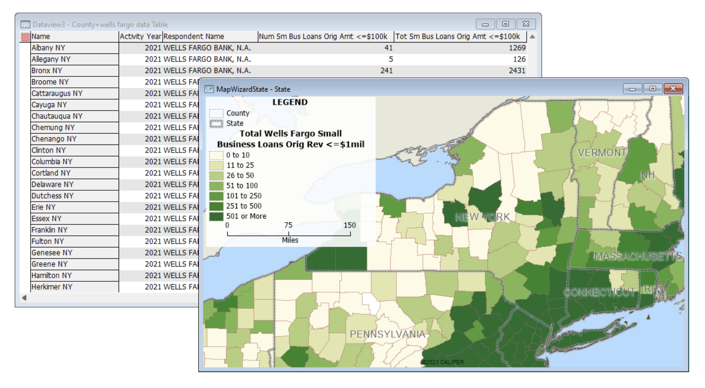
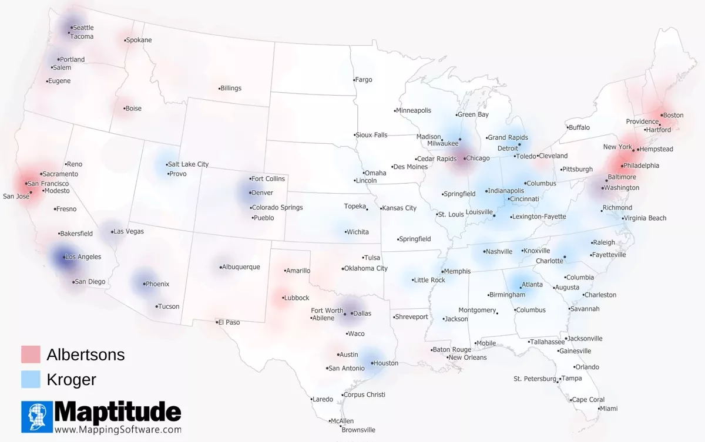
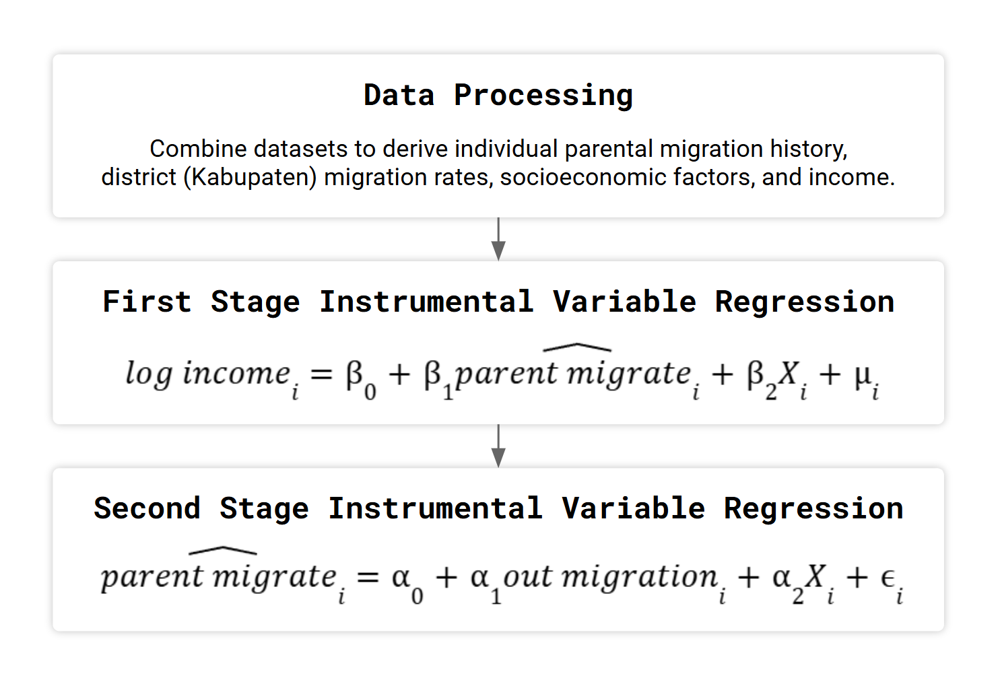

I'm a Data Science MS candidate at Harvard (graduating May 2026) with experience in machine learning and data analytics across fintech and geospatial domains. I'm targeting data and analytics consulting roles in Jakarta from July 2026.
Recently, I interned at GoTo Financial (GoPay) in Jakarta, where I built features for QRIS scam detection at 3M+ transactions per day and contributed to a 58.6% reduction in blocked transactions while sustaining detection performance.
Previously, I spent three years at Caliper Corporation, developing geospatial data pipelines and conducting spatial analyses for Fortune 500 clients including Amazon, Optum, and Assa Abloy.
Addressed a core user friction problem at GoTo Financial (GoPay): reducing incorrectly blocked legitimate transactions in a QRIS scam detection system processing 3M+ transactions/day, without compromising detection performance.
Developed a large-scale feature set integrating transactional, behavioral, geographic, and identity verification signals in Python and SQL (Alibaba MaxCompute), applying multi-method feature selection (variance threshold, LASSO, random forest, XGBoost) to identify a high-signal subset; extended the production XGBoost model via incremental learning to incorporate new features while retaining prior model knowledge.
Conducted precision-recall tradeoff analysis across model configurations and presented threshold recommendations to the business team, contributing to a 58.6% reduction in blocked transactions while sustaining scam detection performance.

Established the company's first data governance framework for land parcel data by partnering with mapping and legal division heads, building an automated health report that reduced missing data from ~80% to ~10% across a ~20,000-record database. Presented a data maturity assessment and infrastructure recommendations to company directors as part of a digital transformation initiative.

Built an interactive Streamlit visualization tool combining wearable biometric signals with user-annotated stress events, using Pandas for data cleaning and Altair for interactive time-series visualizations to help users identify personal stress patterns.

End-to-end ML pipeline on 2022 MA voter data: Census block-group demographics via GeoPandas, LASSO feature selection (38 to 13 predictors), tuned random forest regressor (R² = 0.86 on test set), and SHAP analysis identifying income, language, ethnicity, and age as key drivers. Deployed as an interactive D3.js data product with choropleth maps and county-level turnout prediction.

Designed CHESTER, a hierarchical TensorFlow neural network combining a feedforward State Model and Bidirectional LSTM to classify space objects as payloads, rocket bodies, or debris. Trained on Space-Track.org orbital elements using SMOTE and a staged freeze-and-fine-tune procedure, achieving 93.66% test accuracy across 3 object categories.

Modeled climate change impacts on hurricane potential intensity across CMIP6 scenarios, applying GEV distribution fitting and Kolmogorov-Smirnov scoring to quantify shifts in extreme storm risk relevant to climate risk assessment. Developed the tc_potential and tc_extremes Python library modules with Dask for large-scale parallel climate data processing.

Processed a 16M+ record, 99-field FFIEC HMDA mortgage loan dataset, aggregating loan-level data to Census tract geographies and integrating multi-source CRA compliance layers to produce analysis-ready geospatial datasets for a commercial banking analytics product.

Joined location and demographic datasets across ~40 Albertsons and Kroger subsidiary brands to analyze merger impact, running radius and drive-time analyses to estimate that 56% of the US mainland population lives within 5 miles of a combined store location, profiling geodemographic overlap across major US cities.

Econometric study using 21 years of panel data from the Indonesian Family Life Survey (IFLS, 22,000 individuals), applying instrumental variable regression using region-level migration rates to estimate the long-term causal impact of parental migration on child income.